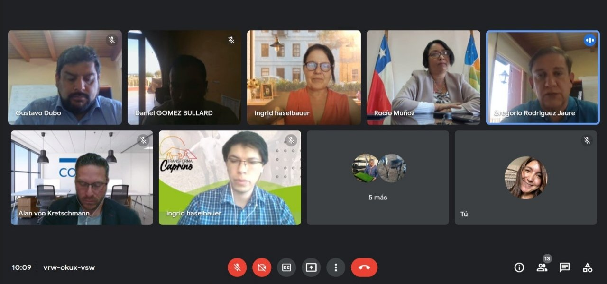

El objetivo fue abrir un espacio de encuentro con la gobernadora, Krist Naranjo, para mostrar los avances y desafíos del programa.

Fortalecer los vínculos con organismos estratégicos fue el objetivo de la reunión sostenida entre el equipo del Transforma Caprino de Corfo y el Gobierno Regional, liderado por Krist Naranjo. La misión fue presentar el recorrido del programa desde sus inicios y el plan de acción proyectado para los próximos años. Además, se compartieron los indicadores de desempeño, algunos proyectos emblemáticos y las acciones de difusión más importantes contempladas dentro de la estrategia.
Krist Naranjo, gobernadora de la Región de Coquimbo, explicó que «queremos que este tipo de iniciativas lleguen a nuestros pequeños productores y productoras, porque son parte de nuestro foco de atención como Gobierno Regional. Además, fortalecer la cadena de valor de sus productos generará una economía circular que reactivará sus ingresos, un beneficio importante para el sector rural».
Durante la sesión, que se realizó de manera virtual, se presentó el camino recorrido por el programa desde sus inicios y cuáles serán las acciones concretas con las que busca contribuir a la competitividad de los productos caprinos, tanto en el mercado regional, como nacional e internacional. Estas acciones están focalizadas, principalmente, en solucionar problemas dentro de la cadena productiva, favorecer la inocuidad alimentaria, introducir valor agregado y diversificar la oferta, estimular la asociatividad dentro del rubro y estimular la demanda de productos a través de acciones de difusión.
Ingrid Haselbauer, gerente del programa, indicó que «esta nueva etapa de nuestro programa tiene objetivos claros y para eso necesitamos articular todas nuestras redes de colaboración y apoyo, por lo que estamos muy contentos de haber sido recibidos por la gobernadora, Krist Naranjo. Durante la presentación pudimos compartir todo lo que hemos avanzado y todo lo que queda por avanzar y su buena disposición nos da la tranquilidad de que no estamos solos en esto sino que es una misión compartida hacer crecer esta actividad ancestral de la Región de Coquimbo».
Gregorio Rodríguez, director de Corfo Coquimbo, explicó que «estamos muy contentos porque se haya abierto este espacio de conversación con el Gobierno Regional, ya que este programa ha sido un tremendo aporte a la actividad caprina y eso debe saberse y apoyarse. Los actores claves son una parte fundamental del éxito de estas iniciativas y por lo que seguiremos abriendo espacios de diálogos y colaboración con todos quienes estén directa o indirectamente ligados a la actividad caprina».
Transforma Caprino es un programa apoyado por Corfo y financiado por el Gobierno Regional, a través del Programa Gestión Territorial de Zonas Rezagadas, que busca impulsar la cadena de valor del rubro caprino, focalizado en las comunas de Punitaqui, Monte Patria, Combarbalá, Canela y otras. Para más información, es posible visitar sus redes sociales, donde se encuentra como @caprinochile.